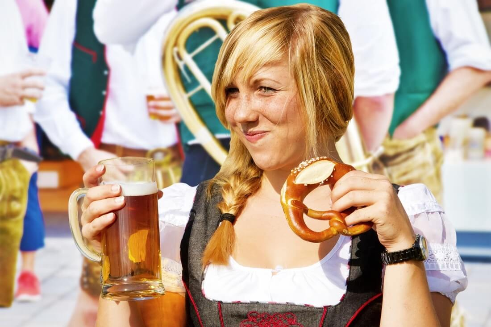
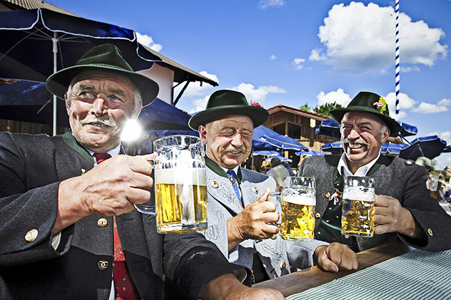
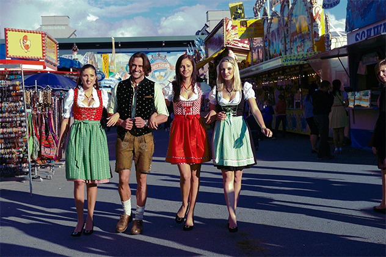
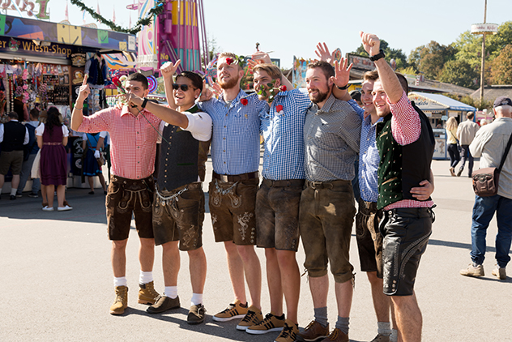
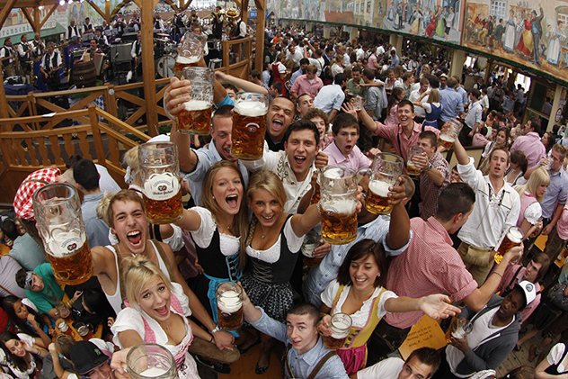
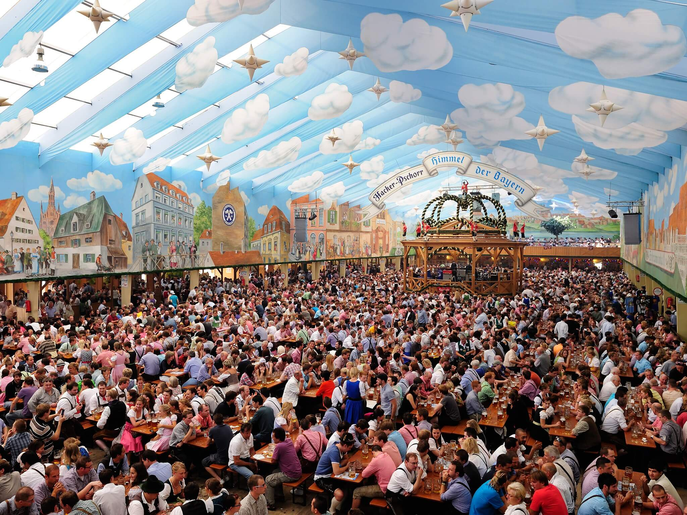
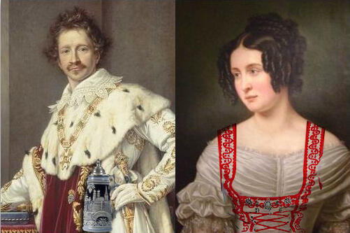
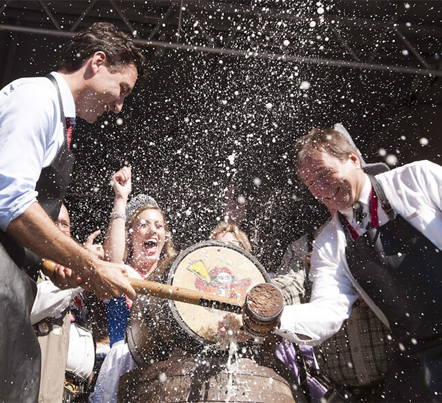

ABOUT OKTOBERFEST PARKLANDS
From the team that brought you The Commons Street Feast, Kicks Entertainment, is bringing a huge stein of Bavarian tradition to Central Canberra like it’s never been done before! It’s Oktoberfest, all dressed up!
Oktoberfest Parklands will transform Patrick White Lawns by Lake Burley Griffin into a lakeside celebration of the world’s largest beer and food festival, with Craft Beer Halls, Bavarian Food Truck Village, Oompah bands, DJs, traditional dancers, side show alley and a whole host of other entertainment to blow dein mind.
Think Kranski, Pork knuckles, Pretzels and steins of beer (plus German wines & other drinks of course), all while singing a German Oompahpah in an Epic Beer Hall and across the beautiful waterside location just minutes from Civic.
So don your lederhosen or dirndl & kommt spaß machen!

DIE DEETS
Venue: Patrick White Lawns, Parliamentary Triangle, Canberra
Date: Saturday, 14 October 2017
Time: 12pm – 10pm
Age: 18+
Tickets get you entry, wunderbar entertainment, a commemorative Oktoberfest Parklands Beer Stein and your first drink is on us! PROST!
- 
- 
- 
- 
THE KULTUR OF
OKTOBERFEST

Oktoberfest, or as the Germans also like to call it – Wiesn, after the festival ground Theresienwiese - is the world’s largest folk festival, held in Münich, Germany. Oktoberfest is an important part of Bavarian culture, held since the Middle Ages, and is now attended annually by more than 6 Million people.

Oktoberfest didn’t begin as a celebration of food and wine, the very first one was actually a Royal Wedding between King Ludwig I and Princess Therese of Saxe-Hildburghausen. Taking place on 12 October, 1810, all citizens of Münich were invited to attend the festivities held on the fields in front of the city gates to celebrate the royal event. With some 40,000 people attending and having such an amazing time, the decision to repeat the spectacle and celebrations in 1811 launched what is now the annual Oktoberfest.

The most honoured tradition of Oktoberfest is the Tapping of the Keg. No beer is consumed at the festival until the mayor officially opens the first keg to signify the opening of the festival and this is known as Anzapfen. And that’s when the fun starts!
The Bavarian Purity Requirements:
Oktoberfest beer is not just any beer. Since the 16th century there have been strong regulations about brewing Bavarian beer and how to keep up the high quality of the final product. One of the oldest laws are the Bavarian Purity Requirements, decreed by Duke William IV. in 1516: only water, hops and barley should be used to brew Bavarian beer.
FAQ
WHAT IS OKTOBERFEST PARKLANDS?
A Bavarian cultural festival which celebrates the amazing German Volksfest with great beer, amazing food, traditions and a whole lot of entertainment!
WHERE IS OKTOBERFEST PARKLANDS?
Oktoberfest Parklands will be help just 5 minutes drive (or 20 minutes walk) from Canberra CBD at the Patrick White Parklands on Parkes Place, Parkes.
WHAT ARE THE OPENING HOURS FOR OKTOBERFEST PARKLANDS?
Oktoberfest Parklands opens at midday and closes at 10pm on 14 October.
HOW CAN I GET TO OKTOBERFEST PARKLANDS?
Public Transport
ACTION bus services provide regular (and cheap) buses to Parkes from all over Canberra. The closest bus stop is located along King Edward Terrace, followed by Commonwealth Avenue.
https://www.transport.act.gov.au/home
Parking
There are several car parks surrounding Patrick White Parklands, including an all day car park along Parkes Place, towards the lake.
If you choose to drive, please ensure you have a designated driver who is not drinking.
Taxi & Uber
There will be designated drop off and pick up points for Taxi and Uber passengers post event.
Planning to Walk
It is about a 20 minute walk from Canberra CBD. If you’re planning to walk, stay on the designated pedestrian pathways and obey all traffic signals and rules.
Free Buses to Civic & select surrounding areas post event At the completion of Oktoberfest Parklands, free buses will departing from the event to Canberra CBD and select areas.
CAN I BRING MY OWN ALCOHOL IN?
Nein, nope, das geht nicht.
CAN I BRING ANY LIQUIDS IN WITH ME?
Nein, no liquids are permitted.
CAN I BRING MY OWN FOOD WITH ME?
Nein, no foods will be allowed in.
CAN CHILDREN ATTEND THE FESTIVAL?
Nein, this is an 18+ event.
CAN I ONLY DRINK BEER?
We will be serving a wide range of drinks besides beer, including wines and other alcoholic and non-alcoholic drinks.
DO I HAVE TO DRESS UP?
You don’t have to dress up, but it’s definitely encouraged! We say embrace the day, so get your friends together and don your lederhosen or dirndl.
Check out www.costumebox.com.au for some Outfit Of The Day inspiration. Use the code to get 15% off and free shipping on any order above $80.
I NEED TO BRING MY OWN MEDICATION IN WITH ME, HOW DO I DO THIS?
If you need to bring in prescription medication or over-the-counter medication, you will need to make sure it is clearly labelled and preferably in its original packaging.
Please be aware security may ask the Oktoberfest Parklands medical team to check your medication upon arrival.
If you’re unsure or have any questions, get in touch with us through our contact page
WHAT STUFF AM I NOT ALLOWED TO BRING INTO OKTOBERFEST PARKLANDS?
You can find a full list of ‘oh no-no’ banned items here
CAN I SMOKE IN OKTOBERFEST PARKLANDS?
This is a no smoking event, there will be a designated smoking area where you can smoke.
WILL THERE BE A CLOAK ROOM?
Yes, there will be a cloak room on site.
WHAT HAPPENS IF IT RAINS
The show goes on, rain, hail or shine.
Thankfully, the centre piece of Oktoberfest Parklands is a giant undercover beer hall!
If the weather isn’t looking great make sure to pack a poncho and suitable footwear, but please leave the umbrella at home.
IS OKTOBERFEST PARKLANDS ACCESSIBLE FOR EVERYONE?
We have specific viewing areas around the event for people with special needs.
Please get in touch directly with us for specific event information in regards to access for patrons who have special needs or mobility restrictions here
HOW DO I GET IN TOUCH ABOUT BEING A FOOD OR MARKET VENDOR?
Get in touch via our contact page here and tell us a little about yourself. Please note the majority of spaces have been filled.